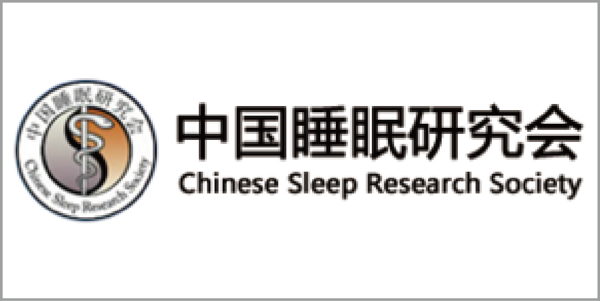
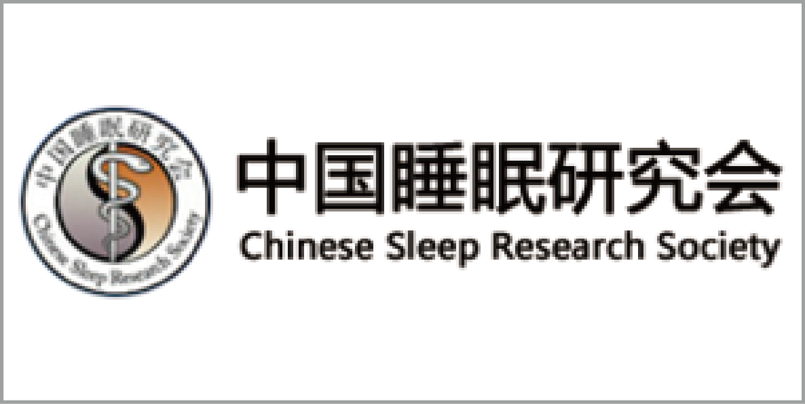

Organized by:
World Federation of Societies for Chronobiology (WFSC)
Chinese Society for Biological Rhythms (CSCB-CSBR)
Soochow University
Aschoff-Honma Foundation
National Institute of Biological Science
Chinese Sleep Research Society

V WCC Logo Competition
V WCC 主题Logo设计正在征集中，目前共收到6幅作品，共设“一等奖”一名，“二等奖”两名，“参与奖”数名，将通过网络投票决定。
（以下所展示的作品按上交时间先后排序）
V World Congress of Chronobiology
Logo的整体设计为一时钟，代表“生物钟”；左侧植物藤蔓缠绕出WCC为“World Congress of Chronobiology”的缩写；中间表盘和鱼缸的轮廓为阿拉伯数字“5”，代指第5届WCC研讨会；斑马鱼为生物钟研究领域的模式生物之一；上方DNA双螺旋结构代表生物钟是可以遗传的，目前生物钟研究集中于分子生物学水平；时钟以黑色轮廓、白色表盘为主，象征会议举办地苏州“黑瓦白墙”的建筑风格。
本会标的主题是拟南芥与生物钟。整个会标由拟南芥染色体3D模型，CSBR四个英文字母及拟南芥莲座叶的轮廓构成，整体形成了一个表盘。 拟南芥是生物钟研究中常用材料之一，Logo选取了拟南芥染色体的3D模型作为表盘的骨架；叶片运动的节律受生物钟调控，用叶片作为表盘的时针和分针；CSRB是生物节律分会（Chinese Society for Biological Rhythms）的简写，指明主旨。
Logo中展现的是青瓦白墙的苏州园林建筑，从园林中一个门洞看向对面的景墙。 两个门洞的边框是“转录-翻译反馈抑制环路（TTFL）”调控示意图，体现生物钟核心振荡器由多重TTFL构成； TTFL中两“蛋白”标注为“V”和“WCC”，是“V World Congress of Chronobiology”的缩写； 景墙的轮廓为象征节律的正弦曲线； 苏州园林的漏窗是复杂多样的，在整个园林艺术中起着重要作用，Logo中的漏窗寓意复杂而精细的生物钟对于生命体适应环境和生长发育至关重要。
利用白墙黛瓦意象和下方的倒影（SZ）彰显苏州特色； 把花窗换成日月形状结合变形的倒影体现节律元素； 太阳花窗内用WCC（其中W包括V）表示V World Congress of Chronobiology。
Logo：简约镂空的窗框不禁追忆苏州园林的诗情画意，“金苏翠帷，玉案象牀”,蓝、黄、黑、绿、红丝组合构成了生物节律曲线，且又似一缕苏绣飘带挽着同心结，彰显着秀丽与活泼，是啊，世界的生物节律科研爱好者同心协力、共同奋进，在探索生物节律的道路上就像这飘带，无论逆风迎风，却都紧紧萦绕着探求事实真理的道路上，未曾分离。2019又一个花开的季节，我们欢聚4月，我们相约苏州，那飘带最后的潇洒一扬，岂不又是下一个高峰。
元素：中国同心结；苏州园林剪窗；苏绣绸带；生物节律曲线；五环颜色（世界）；WCC（ V World Congress for Chronobiology ）